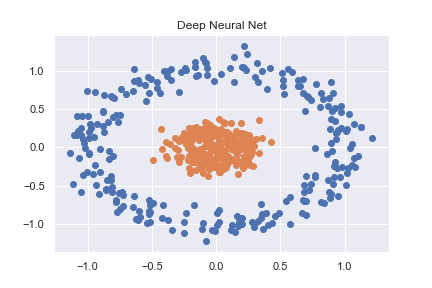
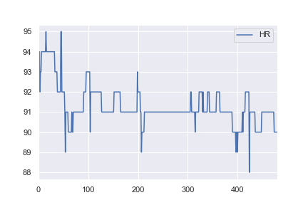
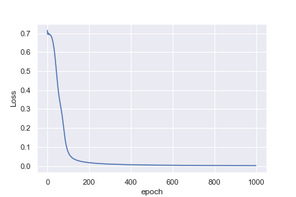
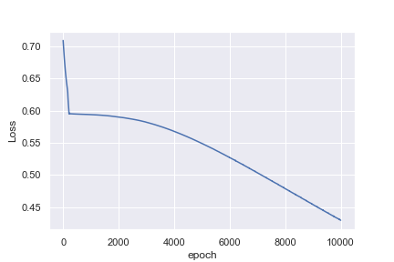
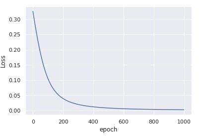
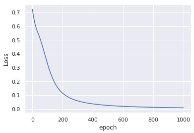

PyTorch Binary Classification - same network structure, 'simpler' data, but worse performance?
To get to grips with PyTorch (and deep learning in general) I started by working through some basic classification examples. One such example was classifying a non-linear dataset created using sklearn (full code available as notebook here)
n_pts = 500 X, y = datasets.make_circles(n_samples=n_pts, random_state=123, noise=0.1, factor=0.2) x_data = torch.FloatTensor(X) y_data = torch.FloatTensor(y.reshape(500, 1))

This is then accurately classified using a pretty basic neural net
class Model(nn.Module): def __init__(self, input_size, H1, output_size): super().__init__() self.linear = nn.Linear(input_size, H1) self.linear2 = nn.Linear(H1, output_size) def forward(self, x): x = torch.sigmoid(self.linear(x)) x = torch.sigmoid(self.linear2(x)) return x def predict(self, x): pred = self.forward(x) if pred >= 0.5: return 1 else: return 0
As I have an interest in health data I then decided to try and use the same
network structure to classify some a basic real-world dataset. I took heart
rate data for one patient from here, and altered it so all values > 91 would
be labelled as anomalies (e.g. a 1 and everything <= 91 labelled a 0).
This is completely arbitrary, but I just wanted to see how the classification
would work. The complete notebook for this example is here.

What is not intuitive to me is why the first example reaches a loss of 0.0016 after 1,000 epochs , whereas the second example only reaches a loss of 0.4296 after 10,000 epochs


Perhaps I am being naive in thinking that the heart rate example would be much easier to classify. Any insights to help me understand why this is not what I am seeing would be great!
Answer
TL;DR
Your input data is not normalized.
- use
x_data = (x_data - x_data.mean()) / x_data.std() - increase the learning rate
optimizer = torch.optim.Adam(model.parameters(), lr=0.01)
You'll get

convergence in only 1000 iterations.
More details
The key difference between the two examples you have is that the data x in
the first example is centered around (0, 0) and has very low variance.
On the other hand, the data in the second example is centered around 92 and
has relatively large variance.
This initial bias in the data is not taken into account when you randomly
initialize the weights which is done based on the assumption that the inputs
are roughly normally distributed around zero.
It is almost impossible for the optimization process to compensate for this
gross deviation - thus the model gets stuck in a sub-optimal solution.
Once you normalize the inputs, by subtracting the mean and dividing by the std, the optimization process becomes stable again and rapidly converges to a good solution.
For more details about input normalization and weights initialization, you can read section 2.2 in He et al Delving Deep into Rectifiers: Surpassing Human-Level Performance on ImageNet Classification (ICCV 2015).
What if I cannot normalize the data?
If, for some reason, you cannot compute mean and std data in advance, you can
still use nn.BatchNorm1d to estimate and normalize the data as part of the
training process. For example
class Model(nn.Module): def __init__(self, input_size, H1, output_size): super().__init__() self.bn = nn.BatchNorm1d(input_size) # adding batchnorm self.linear = nn.Linear(input_size, H1) self.linear2 = nn.Linear(H1, output_size) def forward(self, x): x = torch.sigmoid(self.linear(self.bn(x))) # batchnorm the input x x = torch.sigmoid(self.linear2(x)) return x
This modification without any change to the input data, yields similar
convergance after only 1000 epochs:

A minor comment
For numerical stability, it is better to use nn.BCEWithLogitsLoss instead of
nn.BCELoss. For this end, you need to remove the torch.sigmoid from the
forward() output, the sigmoid will be computed inside the loss.
See, for example, this thread regarding the related sigmoid + cross entropy
loss for binary predictions.